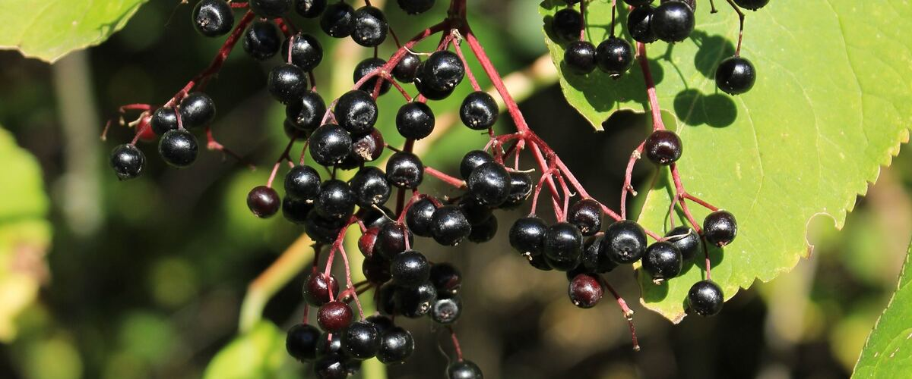

When to plant elderberries in Roseburg, OR
Plant elderberry shrubs in Roseburg Mar 1 – Apr 26.
- Difficulty
- Easy
- Sun
- Full sun to part shade
- Spacing
- 6 to 8 feet apart
- Planting depth
- Same depth as in the pot
- Frost
- Hardy perennial; comes back every year
- First harvest
- Some berries in year two; full crops from year three
Why these dates
Roseburg's typical last spring frost is March 19. As a hardy perennial, this crop doesn't need to wait for that date. In the west-side valleys, though, the soil usually isn't ready to work until about March 1.
West-side valleys. The Willamette Valley, Puget Sound and southern Oregon valleys. Long frost-free seasons, but soil stays cold and wet into May, so warm crops wait for warm soil, not just the last frost.
How to grow elderberries in Roseburg
- Pick a sunny spot with soil that drains well, and mix in an inch or two of compost.
- Plant elderberry shrubs Mar 1 – Apr 26, 6 to 8 feet apart. Same depth as in the pot.
- Plant two varieties for better crops. Water through the first summer, and cut out old, weak canes in late winter to keep the shrub productive.
- Harvest: Cut whole clusters when nearly all the berries are dark and soft. Strip the berries off the stems and cook them before eating.
Key numbers
- 6–12 feetShrub size
- Most, even dampSoil
- Year 2–3First crops
- Raw berries and stemsBiggest risk
Top care tip: Cut out old, weak canes each late winter, and always cook the berries before eating.
Growing notes
What makes the difference in Northwest gardens, in plain language.
Which elderberries to grow
Blue elderberry is native across much of the Northwest, from sunny west-side valleys to the dry east side, and its berries are the edible kind when cooked. American and European elderberry varieties like York, Adams and Nova are bred for bigger fruit clusters and grow well on both sides of the Cascades. Red elderberry, the common native on the west side, is lovely for birds but its berries are not for eating.
Safety in the kitchen
Elderberry leaves, stems, roots and unripe berries contain compounds that can cause nausea and vomiting. Strip ripe berries off every bit of stem (freezing the clusters first makes it easy), and always cook them into syrup, jam or pie. The flowers are also edible and make a classic cordial.
Planting and care
Elderberries are fast, tough shrubs that tolerate damp soil, some shade and neglect. Plant two varieties for better crops, water through the first summer and keep mulch around the shallow roots. Canes fruit best in their second and third years; cut out older ones at ground level in late winter. They spread by suckers, so give them room or mow around them.
Common questions
When is the last frost in Roseburg, OR?
Typically March 19. In 9 years out of 10, frost is over by April 13. These are 1991–2020 NOAA climate normals for Roseburg Regional Airport.
Is it too late to plant elderberries in Roseburg?
The spring planting window runs through April 26. Potted plants can still go in later if you water them faithfully through their first summer. Fall planting also works well here.
How long until I can pick elderberries?
Some berries in year two; full crops from year three. Cut whole clusters when nearly all the berries are dark and soft. Strip the berries off the stems and cook them before eating.
Can you eat raw elderberries?
No. Raw berries can cause stomach upset. Cook them first, and remove all stems and leaves.
Is the native red elderberry edible?
Its berries are not recommended for eating. Grow blue elderberry or a fruiting variety like York or Adams if you want berries.
Do I need two elderberry plants?
Most set some fruit alone, but you'll get much bigger crops with two different varieties planted near each other.
Also plant in Roseburg around the same time
Planting dates for elderberries in nearby areas
- Medford, OR Mar 1 – Apr 26
- Grants Pass, OR Mar 1 – Apr 26
- Ashland and Talent, OR Mar 25 – May 20
- Portland, OR Mar 1 – Apr 26
- Gresham, OR Mar 1 – Apr 26
- Wilsonville and Canby, OR Mar 1 – Apr 26
Full planting calendar for Roseburg · Elderberries in every city